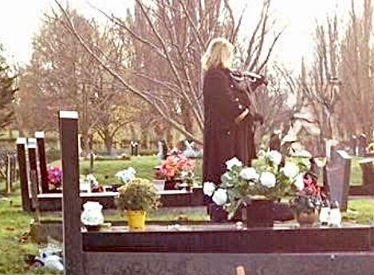
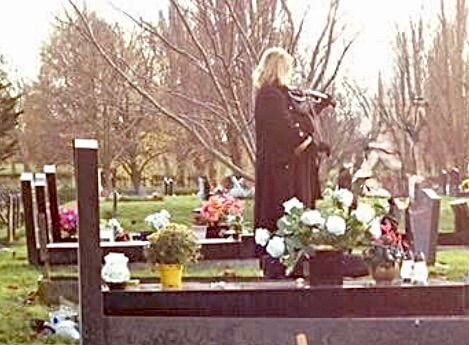
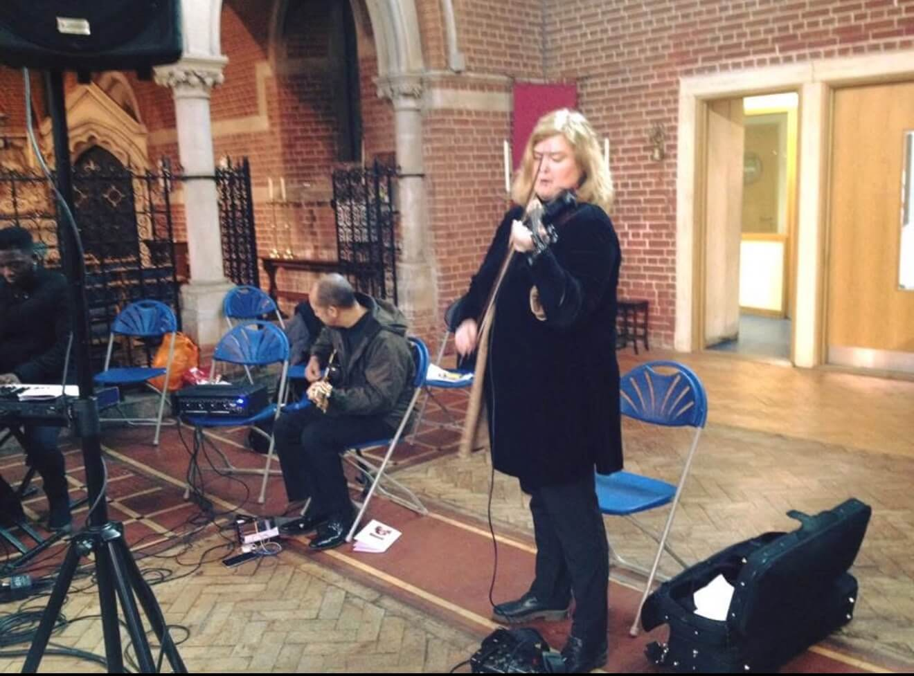
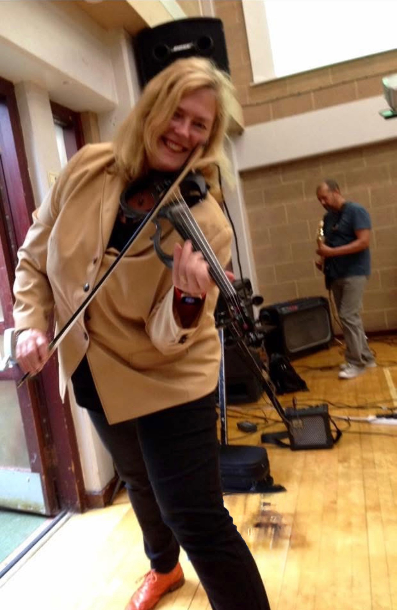
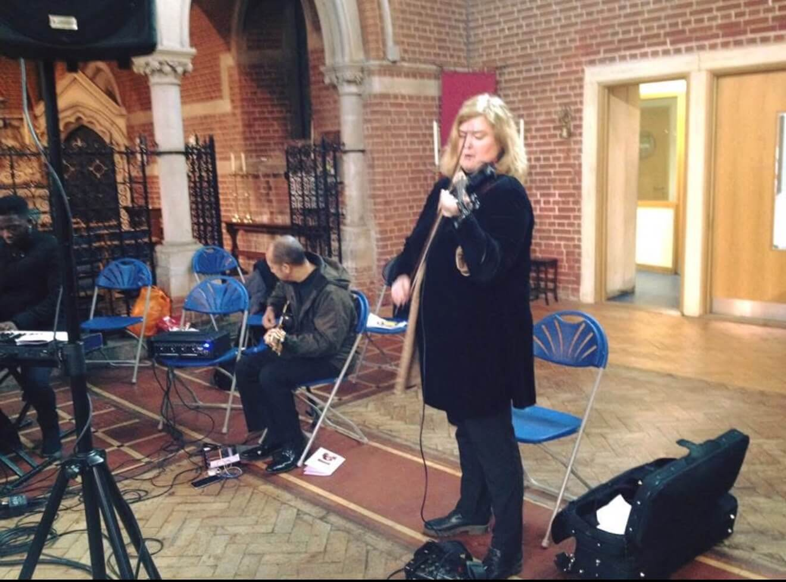
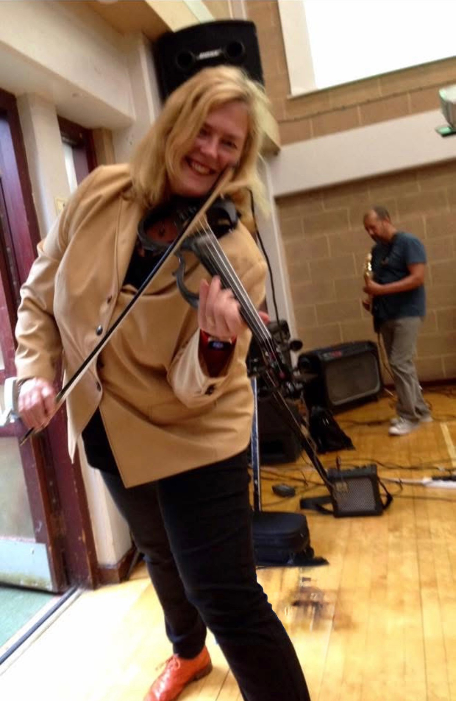

Dorothé Blake
Professional Violinist for Weddings, Funerals, Studios & Special Events
Classically trained violinist with over 40 years of performance experience across Europe and North America. I specialise in creating beautiful musical moments for:
My performances blend technical precision with emotional depth to perfectly complement your special occasion, whether live or in the studio. With extensive experience in improvisation across any music genre, I can adapt and create unique musical moments tailored to your specific needs.

Began playing at age 7 in Rotterdam. Joined church worship teams and the Rotterdam Youth Symphony Orchestra by age 12.
Played with bands across the Netherlands, Belgium, France and America, recording albums and ministering through music. Performed with the Christian Radio and TV Orchestra (Evangelische Omroep).
Member of Brent Symphony Orchestra, session violinist, and active worship musician at HTB London. Performed at over 200 events.
"Dorothé's performance at our wedding was absolutely magical. She learned our special song perfectly and brought many guests to tears with her beautiful playing. Her professionalism and attention to detail made our ceremony unforgettable."
"The violin music at my mother's funeral was so moving and exactly what she would have wanted. Dorothé handled everything with such sensitivity and created a truly beautiful atmosphere. Her playing brought comfort to everyone present."
"Dorothé played at our deal of the year corporate event and was absolutely brilliant. She adapted her repertoire perfectly to our audience and created such an elegant atmosphere."
"Dorothé recorded violin parts for our Christmas gospel album and she was wonderful. She captured the perfect emotional tone for each track and her playing brought the whole project to life."


 



 




Weddings start from £150
Funerals start from £100
Special Events start from £150
Studio Sessions start from £150
Full Pricing Details for Booking